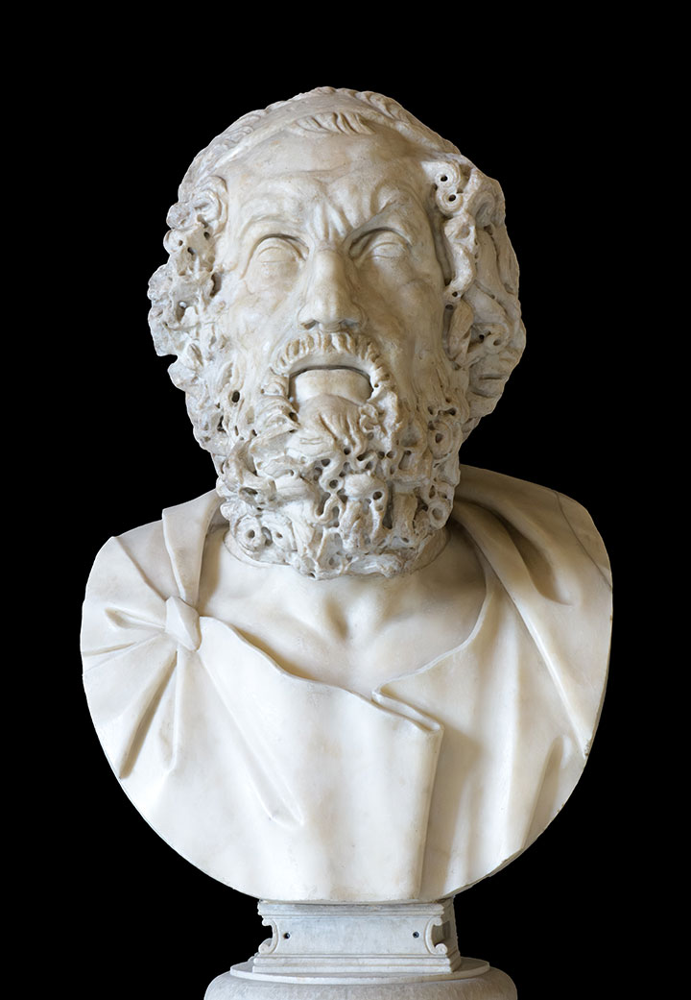
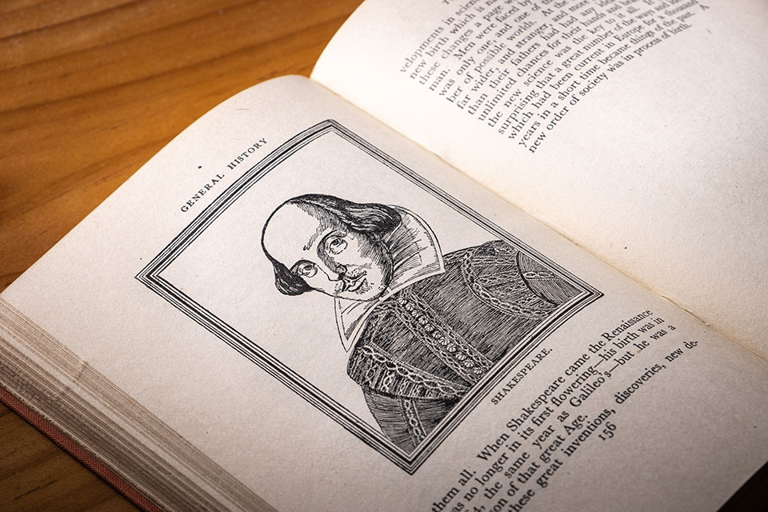

이야기(Story) 저작권의 역사는 인류가 지식과 이야기를 인식하는 방식이 ‘공동체의 기억’이라는 공공의 영역에서 출발하여, 인쇄술이라는 기술 혁명을 거쳐 ‘시장의 상품’으로, 그리고 근대적 주체로서의 저자가 가지는 ‘법적 권리’로 변모해온 거대한 사유의 기록이다. 고대의 신화와 서사시가 흐르던 시기부터 1710년 영국에서 제정된 세계 최초의 근대적 저작권법인 앤여왕법(Statute of Anne)에 이르기까지, 인류는 기술과 권력, 종교와 시장이라는 복합적인 동력 속에서 이야기를 어떻게 통제하고 보호할 것인가를 두고 치열한 논쟁과 투쟁을 벌여왔다.
고대 그리스와 로마
고대 그리스와 로마에서 이야기는 개인의 소유물이라기보다는
공동체의 정체성을 유지하고 전승하는 핵심적인 자산이었다.
그러나 이 시기에도 이미 지적 산물의 ‘부당한 이용’에 대한
윤리적 감각 존재했다.
고대 그리스의 서사시인 일리아스와 오디세이아는 전설적인 시인
호메로스(Homer)의 이름으로 우리에게 전해진다. 하지만 현대
학술적 관점에서 이 작품들은 특정 개인의 단독
창작물이라기보다는 수 세대에 걸쳐 전승된 구전 전통의
집대성으로 이해된다. 당시의 음유시인들은 선대부터 내려온
이야기의 골격을 유지하면서도, 각자가 처한 상황과 청중에 맞춰
내용을 변주하고 확장했다. 이 시대에 변형은 권리의 침해가
아니라 오히려 창조적 행위의 본질이었다. 창작자와 향유자의
경계가 모호했으며, 이야기는 공기처럼 공동체 전체에 속한
것이었다. ‘저자’라는 개념이 부재했던 것은 아니나, 그것이
‘소유’나 ‘배타적 통제권’과 결합되지는 않았다. 이야기는
공유됨으로써 그 생명력을 얻었으며, 이를 독점하려는 시도는
고대의 공동체적 가치관에 부합하지 않았다.

▲ 호메로스 흉상 ©Shutterstock마르티알리스와 ‘플라기아리우스(Plagiarius)’
1세기 로마의 시인 마르티알리스(Martial)는 저작권의 역사에서 ‘표절’이라는 개념을 언어화한 인물이다. 그는 자신의 시를 도용하여 마치 자신의 것처럼 대중 앞에서 낭독하는 경쟁 작가들을 맹렬히 비난하며 이들을 ‘플라기아리우스(plagiarius)’라 불렀다.1 ‘플라기아리우스’는 본래 로마법에서 자유인이나 노예를 유괴하는 ‘유괴범’을 뜻하는 단어였다. 마르티알리스는 자신의 시를 자신의 자녀나 노예와 같은 인격적, 재산적 부속물로 간주했으며, 이를 훔치는 행위를 인간 유괴에 비유함으로써 표절의 도덕적 심각성을 강조했다. 그는 책을 시장에서 판매되는 상품(commodity)으로 인식하기 시작했으며, 정신적 산물에 재산적 가치를 부여하여 저자로서의 정체성을 확립하고자 했다. 당시 로마에는 저작권법이 없었으므로 그의 비난은 법적 소송이 아닌 풍자시를 통한 사회적 매장에 그칠 수밖에 없었다. 마르티알리스의 이러한 외침은 창작물이 창작자의 이름과 분리될 수 없다는 저작권의 씨앗이 이미 고대 로마의 토양에서 싹트고 있었음을 보여준다.
중세 유럽
중세 유럽에서 (특히 성경에 관한) 이야기는 인간의 창의적 산물이라기보다 신의 계시나 성스러운 전승의 일부로 여겨졌다. 수도원을 중심으로 이루어진 지식의 생산과 복제 과정에서 ‘창작자’라는 개인적 주체는 신의 영광에 가려졌다. 당시의 양피지 필사본은 매우 귀한 것이어서 엄격하게 관리되었다.
성 콜룸바와 핀니안의 ‘카타흐(Cathach)’ 분쟁2
6세기 아일랜드에서 발생한 콜룸바(Columba)와 핀니안(Finnian)의 분쟁은 저작권 역사에서 전설적인 ‘최초의 복제권 소송’으로 회자된다. 수도사 콜룸바는 스승 핀니안이 가지고 있던 귀중한 성서(시편)를 몰래 밤을 새워 복제했고, 이를 알게 된 핀니안은 사본의 소유권을 주장하며 국왕에게 중재를 요청했다. 당시 왕이었던 디아메이트 마크 케르바일(Diarmait Mac Cerbaill)은 인류 법제사에서 유명한 유추 해석 중 하나인 다음과 같은 판결을 내렸다. “소에게는 송아지가 속하듯, 책에는 그 사본이 속한다(To every cow belongs her calf, therefore to every book belongs its copy)”.3 이 사건은 현대적 의미의 저작권법이 탄생하기 천년도 더 전에, 텍스트의 복제가 원본의 가치를 훼손할 수 있다는 인식과 복제물을 누가 소유해야 하는가에 대한 법적 판단이 내려졌다는 점에서 매우 상징적이다.
르네상스 베니스
15세기 중엽 요하네스 구텐베르크(Johannes Gutenberg)가 발명한 활자 인쇄술은 인간의 물리적 복제 속도를 초월했다. 이야기는 더 이상 필사하는 자의 속도에 묶여 있지 않았고, 대량 생산된 책은 시장에서 거래되는 핵심 상품이 되었다. 복제가 쉬워지고 상업적 가치가 커지자, 이를 통제하고 독점하려는 국가와 업자들의 이해관계가 맞물리기 시작했다.
베니스의 출판 특권과 독점권의 진화
당시 유럽 출판의 중심지였던 베니스 공화국은 새로 운 인쇄 산업을 보호하고 육성하기 위해 ‘특권(Privilegio)’이라는 제도를 운용했다. 이는 현대의 저작권과는 달리, 국가가 특정 개인에게 한시적으로 부여하는 ‘독점적 사업권’의 성격이 강했다. 초기 특권은 특정 도서가 아니라 ‘인쇄 기술’ 자체에 대한 독점이었다. 1469년 독일 출신의 인쇄업자인 요하네스 스피라에게 부여된 독점권은 일종의 특허(Patent)에 가까웠으며, 경쟁자들의 진입을 막아 산업 초기의 투자 비용을 회수하도록 돕는 장치였다. 1487년 베니스 원로원은 인문학자 사벨리코에게 그의 저서 『베니스 역사(Decades rerum Venetarum)』에 대한 독점 출판권을 부여했다. 이는 인쇄업자가 아닌 ‘저자’에게 직접 부여된 최초의 기록된 특권으로 평가받는다. 국가는 그의 저작이 공공의 이익(Public utility)에 기여한다는 점을 인정하여, 그에게 인쇄업자를 직접 선택하고 무단 복제를 막을 권리를 주었다.4
근대 영국
베니스의 ‘특권’ 제도는 유럽 전역으로 퍼져나가 영국의 ‘칙허(Royal Charter)’ 제도에 영향을 주었다. 영국의 저작권 역사는 창작자의 권리 보호보다는 ‘사상 통제’와 ‘상업적 독점’이라는 두 가지 국가적 목표 아래 형성되었다. 16세기부터 17세기까지 영국의 출판 환경은 저자보다는 인쇄업자 길드인 출판조합(Stationers’ Company)의 지배 아래 있었다. 1557년, 메리 1세는 런던의 인쇄업자들에게 칙허장을 부여하여 출판조합을 공식적인 길드로 승인했다. 이 결정의 배경에는 당시 종교 개혁의 물결 속에서 개신교 서적의 확산을 막으려는 검열의 목적이 컸다. 이 시기 저작권은 ‘창작의 대가’가 아니라 ‘등록의 결과’였다. 복제 및 유통의 주도권은 전적으로 길드에 있었으며, 출판업자들은 이를 자손 대대로 물려줄 수 있는 영구적 재산으로 취급했다.
셰익스피어 전집 초판의 권리 관계
영국 문학의 자부심인 윌리엄 셰익스피어(William Shakespeare)조차
자신의 작품에 대한 저작권을 행사하지 못했다. 1623년 발행된
셰익스피어 희곡 전집(First Folio)의 제작 과정을 살펴보면 당시의
권리 구조가 잘 드러난다. 셰익스피어의 동료 배우인 헤밍스와
콘델이 원고를 모았고, 에드워드 블라운트와 아이작 재거드 등의
출판업자들이 자금을 대어 책을 찍어냈다. 1623년 11월 8일, 이들은
출판조합 등록부에 이전에 출판되지 않았던 16개의 희곡을 자신들의
이름으로 등록했다. 여기서 주인공은 창작자인 셰익스피어가 아니라,
원고를 확보하고 제작 비용을 댄 ‘비즈니스 파트너’들이었다.
셰익스피어의 이름은 책의 가치를 높이는 마케팅 수단이었을 뿐,
법적 권리의 주체는 아니었다.5
1695년, 영국의 인쇄 면허법(Licensing Act) 갱신이 의회에서
거부되면서 출판조합의 영구 독점 체제는 붕괴 위기에 직면했다.
출판업자들은 자신들의 기득권을 지키기 위해 새로운 논리가
필요했고, 역설적으로 그들이 오랫동안 무시해왔던 ‘저자의 권리’를
방패로 삼기 시작했다.

▲ ©Shutterstock다니엘 디포와 ‘정신적 노동’의 재산권화
『로빈슨 크루소』의 작가 다니엘 디포(Daniel Defoe)는 저작권 역사에서 매우 중요한 사상적 전환점을 마련했다. 그는 1704년 발표한 『인쇄 규제에 관한 에세이(Essay on the Regulation of the Press)』에서 저작권 보호를 ‘학술 권장’과 ‘창작자의 정당한 대가’라는 관점에서 주장했다.6 디포는 책을 쓰는 행위가 육체적 노동과 다를 바 없는 고된 ‘정신적 노동’이며, 그 결과물은 당연히 창작자의 재산이 되어야 한다고 강조했다. 그는 타인의 저작물을 무단으로 복제하여 이익을 취하는 자들을 ‘해적’이라 부르며 강력한 법적 규제를 요구했다. 디포의 이러한 논리는 출판조합의 로비와 결합되어, 저작권의 목적을 ‘검열’에서 ‘창작 장려’로 전환시키는 결정적인 계기가 되었다.
1710년 앤여왕법(Statute of Anne)
1710년, 영국 의회는 마침내 앤여왕법(Statute of Anne)을 통과시켰다. 이는 인류 역사상 최초로 저작권의 주체를 ‘저자’로 명시하였고, 보호기간을 최초 출판 후 14년(연장 시 최대 28년)으로 제한 한 근대적 법률이었다. 앤여왕법의 제정은 스토리텔링의 주인이 권력자나 길드에서 ‘저자’로 이동했음을 선포한 사건이었다. 비록 이후에도 출판업자들은 관습법상의 영구 저작권을 주장하며 ‘서적상들의 전쟁(Battle of the Booksellers)’을 이어갔으나, 1774년 도널드슨 대 베켓(Donaldson v. Beckett) 판결을 통해 저작권은 오직 법률에 의해서만 부여되는 ‘기한이 정해진 권리’임이 최종 확정되었다.7
결론: 이야기의 주인은 누구인가
고대의 신화는 공동체의 것이었고, 중세의 경전은 신의 것이었으며,
르네상스의 책은 권력자의 특권이었고, 근대 초 런던의 인쇄물은
길드의 전유물이었다. 1710년 앤여왕법 이후에야 비로소 이야기는
그것을 낳은 저자의 권리가 되었다. 스토리텔링 저작권의 역사는
지식의 가치가 물리적 매체(양피지나 종이)의 점유에서 ‘정신적
창작물’이라는 무형의 자산에 대한 권리로 이동했고, 국가의 ‘사전
검열’을 위한 도구에서 작가에게 창작의 유인을 제공하는 ‘경제적
보상’ 체계로 변화했다.
오늘날 인공지능이 새로운 이야기를 쏟아내는 시대에 우리가 여전히
저작권을 논하는 이유는, 그것이 단순히 돈의 문제가 아니라 ‘누가
이 사유의 주인인가’라는 인간 존재의 근본적인 물음과 맞닿아 있기
때문이다. 앤여왕법이 열어젖힌 근대 저작권의 시대는, 이야기가
권력의 손아귀를 벗어나 개인의 자유로운 창의성으로 꽃피울 수 있게
했다.
- https://topostext.org/work/677
- 6세기 중반에 필사된 것으로 추정되는 시편인 '카타흐'가 현재 아일랜드 왕립 아카데미에 보관되어 있지만, 복제 분쟁에 관한 기록은 사건 발생 후 약 천 년 뒤인 1532년, 마누스 오도넬(Manus O'Donnell)이 쓴 성 콜룸바의 전기인 『비타 콜룸베(Vita Columbae)』에 처음 등장한다. 그 때문에 카타흐 분쟁은 역사적 핵심(Historical Core) 위에 전설적인 요소들이 덧입혀진 사건으로 평가받기도 한다.
- https://www.dib.ie/blog/journey-cathach
- https://www.ip-watch.org/2018/02/07/brief-sketch-privilegio-venetian-renaissance/
- https://en.wikipedia.org/wiki/First_Folio
- https://www.copyrighthistory.org/cam/tools/request/showRecord.php?id=record_uk_1704
- https://en.wikipedia.org/wiki/Donaldson_v_Becket